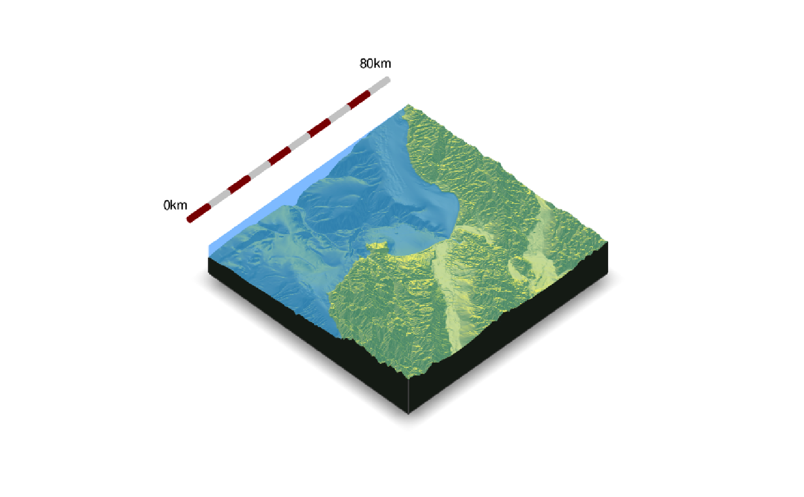
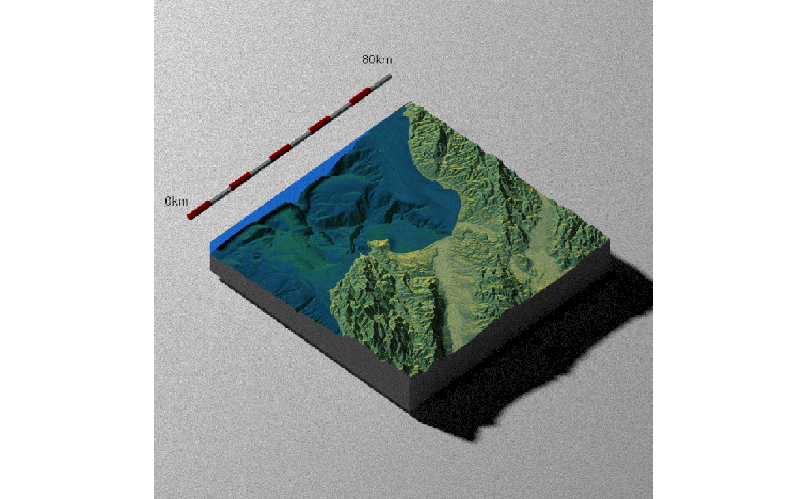
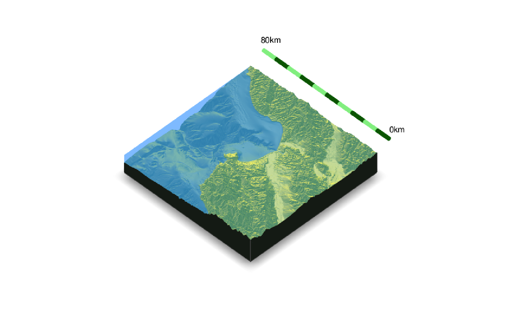
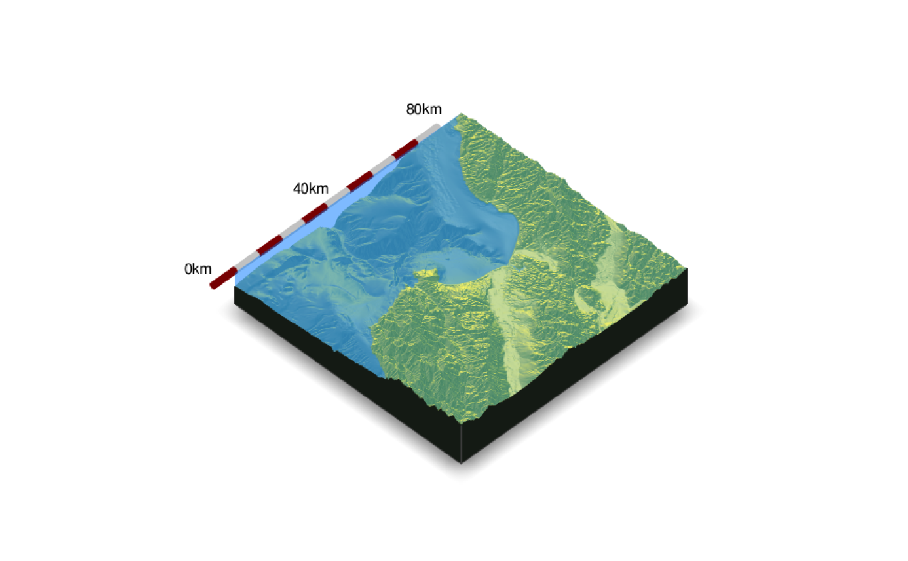
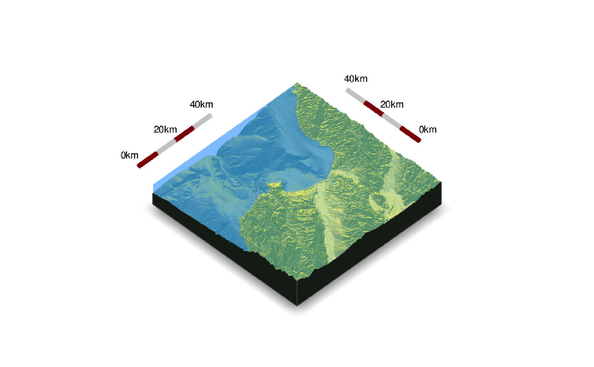
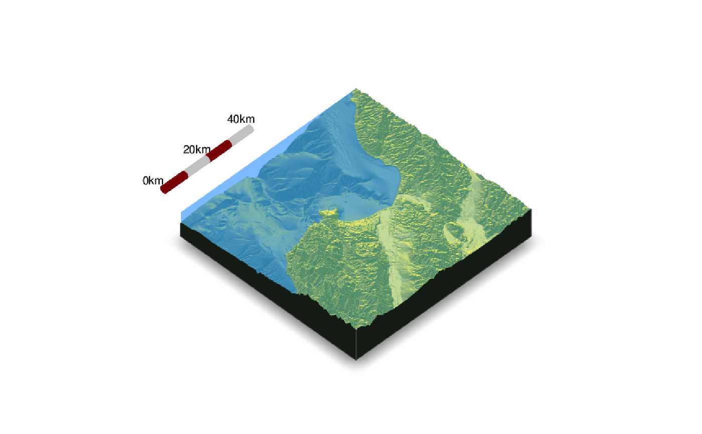

Places a compass on the map to specify the North direction.
render_scalebar( limits, position = "W", y = NULL, segments = 10, scale_length = 1, label_unit = "", offset = NULL, radius = NULL, color_first = "darkred", color_second = "grey80", color_text = "black", text_switch_side = FALSE, text_x_offset = 0, text_y_offset = 0, text_z_offset = 0, clear_scalebar = FALSE )
| limits | The distance represented by the scale bar. If a numeric vector greater than length 1, this will specify the breaks along the scale bar to place labels, with the maximum value in limits assumed to be the last label. Must be non-negative. |
|---|---|
| position | Default `W`. A string representing a direction. Can be `N`, `E`, `S`, and `W`. |
| y | Default `NULL`. The height of the scale bar, automatically calculated if `NULL`. |
| segments | Default `10`. Number of colored segments in the scalebar. |
| scale_length | Default `1`. Length of the scale bar, relative to the side of the map specified in `position`. If a length-2 vector, the first number specifies the start and stop points along the side. |
| label_unit | Default `NULL`. The distance unit for the label. |
| offset | Default `NULL`. The distance away from the edge to place the scale bar. If `NULL`, automatically calculated. |
| radius | Default `NULL`. The radius of the cylinder representing the scale bar. If `NULL`, automatically calculated. |
| color_first | Default `darkred`. Primary color in the scale bar. |
| color_second | Default `grey90`. Seconary color in the scale bar. |
| color_text | Default `black`. Color of the text. |
| text_switch_side | Default `FALSE`. Switches the order of the text. |
| text_x_offset | Default `0`. Distance offset for text in the x direction. |
| text_y_offset | Default `0`. Distance offset for text in the y direction. |
| text_z_offset | Default `0`. Distance offset for text in the z direction. |
| clear_scalebar | Default `FALSE`. Clears the scale bar(s) on the map. |
Displays snapshot of current rgl plot (or saves to disk).
#Add a scale bar to the montereybay dataset, here representing about 80km # \dontrun{ montereybay %>% sphere_shade() %>% plot_3d(montereybay,theta=45, water=TRUE)#>#This function works with `render_highquality()` render_highquality(lightdirection=250, lightaltitude=40, scale_text_size=24,clamp_value=10)render_scalebar(clear_scalebar = TRUE) #We can change the position by specifying a cardinal direction to `position`, and the #color by setting `color_first` and `color_second` render_scalebar(limits=c(0,80), label_unit = "km", position = "N", color_first = "darkgreen", color_second = "lightgreen") render_snapshot()render_scalebar(clear_scalebar = TRUE) #And switch the orientation by setting `text_switch_side = TRUE` render_scalebar(limits=c(0,80), label_unit = "km", position = "N", text_switch_side = TRUE, color_first = "darkgreen", color_second = "lightgreen") render_snapshot()render_scalebar(clear_scalebar = TRUE) #We can add additional breaks by specifying additional distances in `limits` render_scalebar(limits=c(0,40,80), label_unit = "km") render_snapshot()render_scalebar(clear_scalebar = TRUE) #We can also manually specify the height by setting the `y` argument: render_scalebar(limits=c(0,40,80), y=-70, label_unit = "km") render_snapshot()render_scalebar(clear_scalebar = TRUE) #Here we change the total size by specifying a start and end point along the side, #and set the number of colored `segments`: render_scalebar(limits=c(0,20, 40), segments = 4, scale_length = c(0.5,1), label_unit = "km") render_scalebar(limits=c(0,20, 40), segments = 4, position = "N", text_switch_side = TRUE, scale_length = c(0.25,0.75), label_unit = "km") render_snapshot()render_scalebar(clear_scalebar = TRUE) #Change the radius of the scale bar with `radius`. Here, the autopositioning doesn't work well with #the labels, so we provide additional offsets with `text_y_offset` and `text_x_offset` to fix it. render_scalebar(limits=c(0,20, 40), segments = 4, scale_length = c(0.5,1), label_unit = "km", radius=10,text_y_offset=-20,text_x_offset=20) render_snapshot(clear=TRUE)# }